On the Harry branch, not live yet.
Overnight round, 20 Oct 2026. Chances and goals are the same with the switch Off or On. In Admin → Patch notes this is v0.86.
The rebuild had to be easy to turn on and off, and chances and goals had to stay the same either way.
Off is the game as it is now. On turns on all 8 parts of the rebuild.
The switch Full highlights rebuild: Off | On sits in three places: main Settings → Quick, a new ⚙ on the pre-match line-up, and the match ⚙. Everyone can see it. A ? beside it lists the 8 parts. The Full highlights rebuild card left the Chances group. It is still a test page, now with two tabs: Ruler and Build-ups.
Measured over 500 matches. The same numbers in all three.
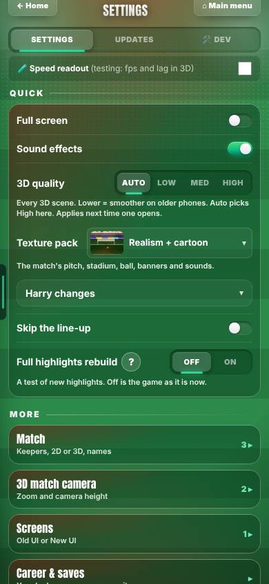
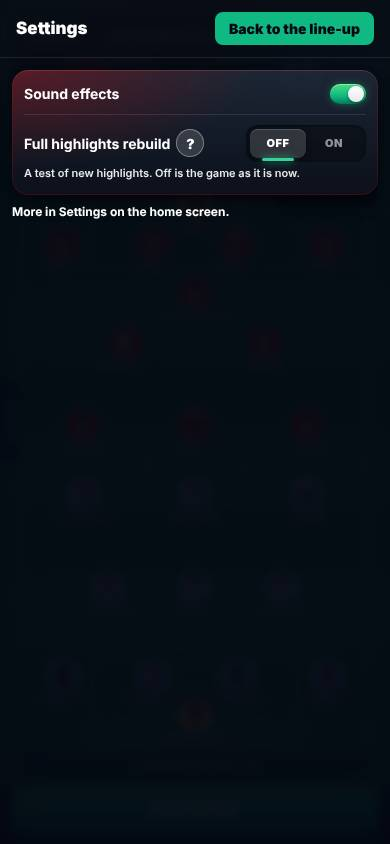
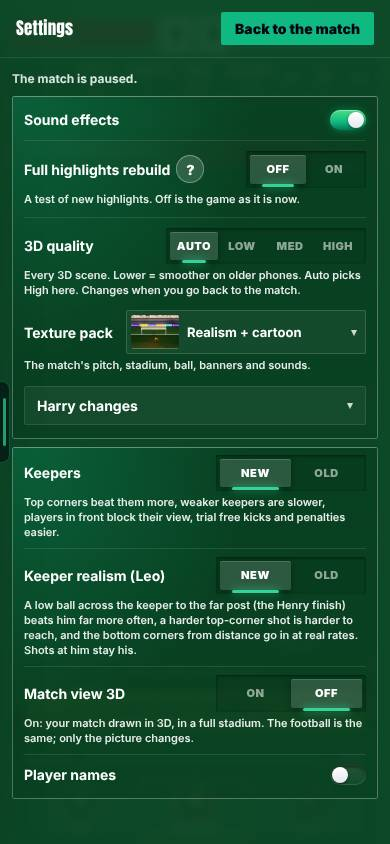
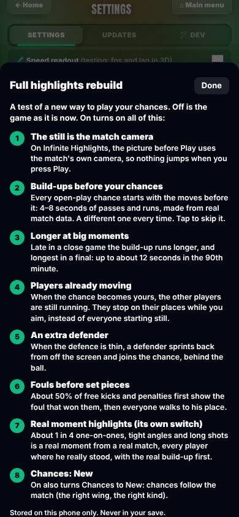
With the switch Off you get the game as it is now: no generated build-up.
With the switch On, every open-play chance starts with the moves before it: passes and runs, a different one every time.
Infinite Highlights and Infinite Match use the career’s build-up builder. A small Build-up · tap to skip label shows while it plays. A Moment / Length / Intensity control is on the test pages only. A sheet of 24 build-ups was checked by eye: 0 problems.
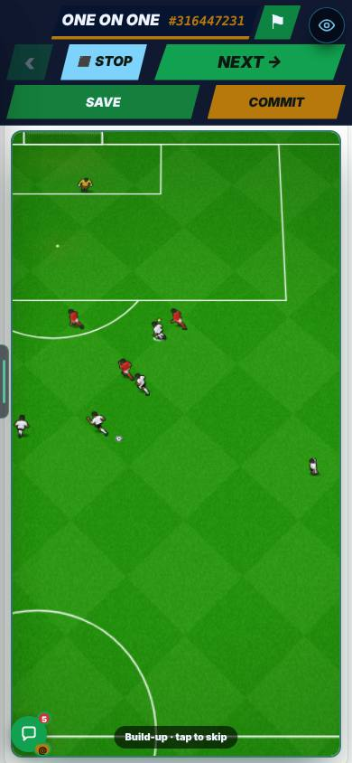
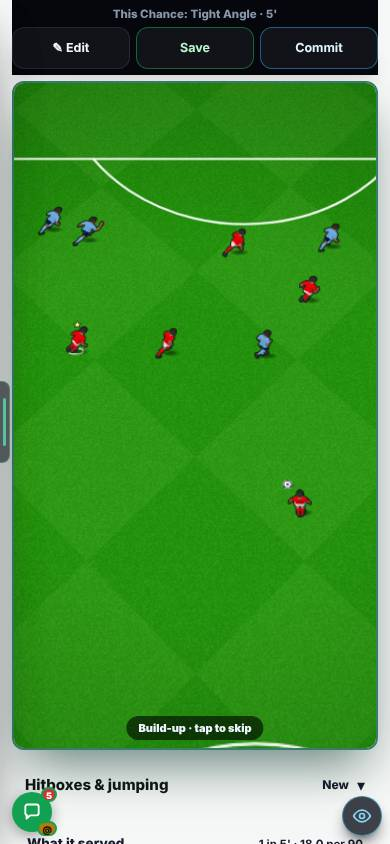
Look for: a build-up of passes and runs, then the chance. The clip is 9 seconds long, on a phone screen.
A build-up ran 4 to 8 seconds, whatever the match was worth.
Big moments (late in a close game, a final) get longer build-ups and quicker passing. Ordinary moments keep the old tempo exactly. The Length control on the test pages: short 5.0 s, auto, long 8.3 s.
Measured on generated build-ups. The “?” says up to about 12 seconds in the 90th minute.
When the chance became yours, everyone started still.
Players already moving at hand-over ease into place over about 0.9 s (1.6 m at most) while you aim. They stop when you kick. Over 358 build-ups: about 8 men moving, median 2.6 m/s, 0 problems. The run-on stopping on an early kick is reasoned from the code, not seen.
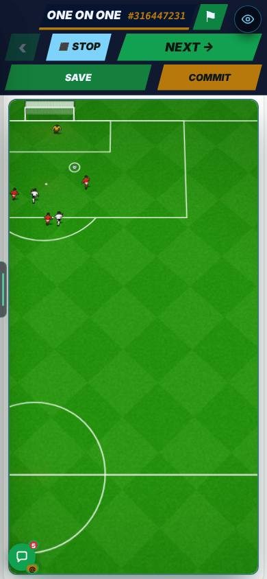
Sometimes the defence was thin.
A covering defender runs in from off screen and always ends up behind the ball. The offside line is unchanged. It happened in 269 of 2,757 open-play chances (9.8%).
Measured on the 269 chances, before → after.
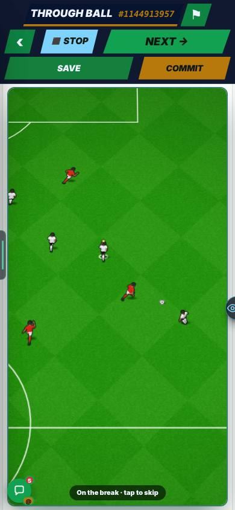
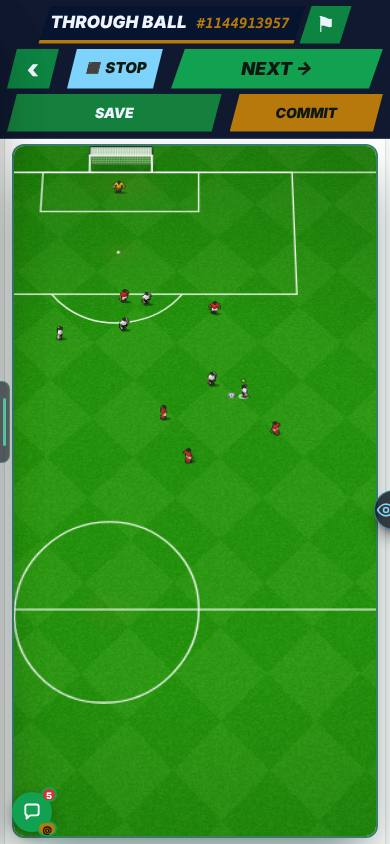
A free kick or penalty just appeared, with no foul before it.
About half of free kicks and penalties first show the foul. You carry the ball, the nearest defender fouls you, the whistle goes, you see “Foul! Free kick.” or “Penalty!”, then everyone walks to place. 44 of 44 were made, each 4.4 to 6.3 s long. The whistle sound is reasoned, not heard.
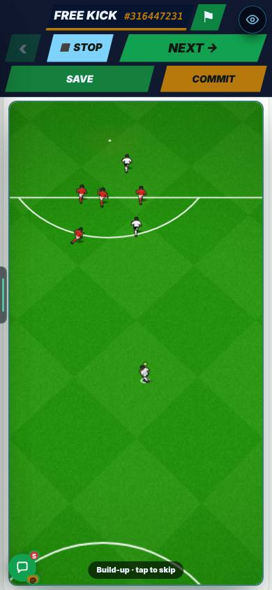
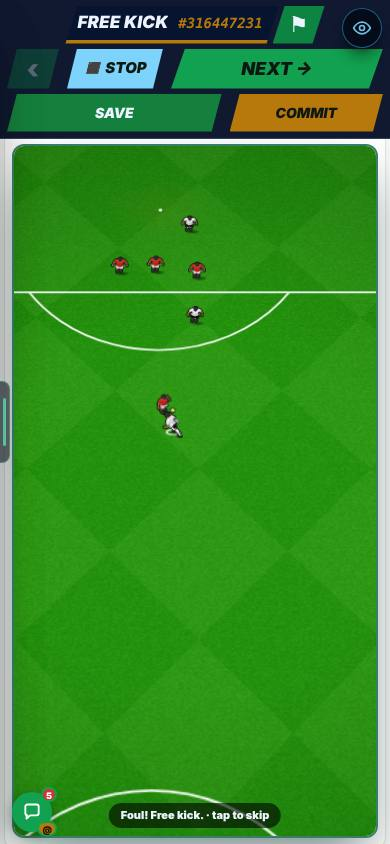
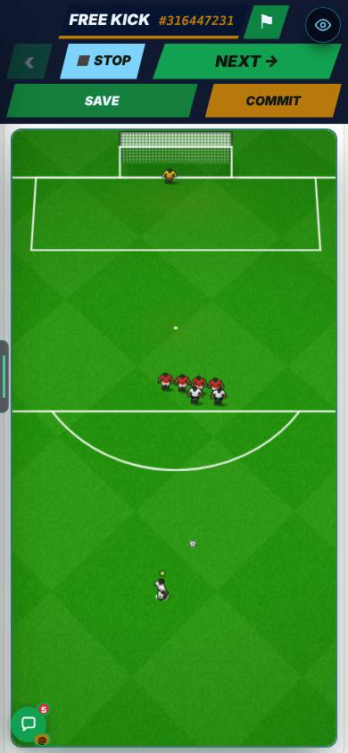
Harry refused two engine edits, so they were left out. The match engine file is unchanged. CanvasMatch, EnginePlay, ScenarioPlay and InfiniteMatch changed for the switch only. Mikey’s scenario gallery is never written to (a test checks it). Pitch widths were measured again: Infinite Highlights 366 px on a phone and 493 on a computer, Infinite Match 366 and 384.
Three things were not seen or heard: the run-on stopping when you kick early, the whistle sound, and how dragging feels on a real phone.
They were worked out from the code. The pictures were taken at 390 × 844 in a test browser.
With the switch On, kick early in a build-up, listen for the whistle at a foul, and drag on your phone.
Chances and goals. 5.81 chances and 2.31 goals a match over 500 matches, with the switch Off, On, and On + build-ups.
Build-up length. Median 6.4 s ordinary. 9.4 s in a level final at 90′ (longest 11.4 s). Breaks at a big moment: median 7.5 s. Length control: short 5.0 s, long 8.3 s.
Players moving at hand-over. 358 build-ups: about 8 men moving, median 2.6 m/s, 0 problems. They ease into place over about 0.9 s, 1.6 m at most.
Extra defender. 269 of 2,757 open-play chances (9.8%). Goals 14.5% → 14.9%. Blocked or tackled 31.6% → 30.5%. Players reacting 4.62 → 5.74.
Fouls. 44 of 44 made, 4.4 to 6.3 s each.
Pitch widths. Infinite Highlights 366 px phone, 493 computer. Infinite Match 366 phone, 384 computer.
A build-up into a chance. 9 seconds, on a phone screen. It is under “Build-ups before your chances” above.